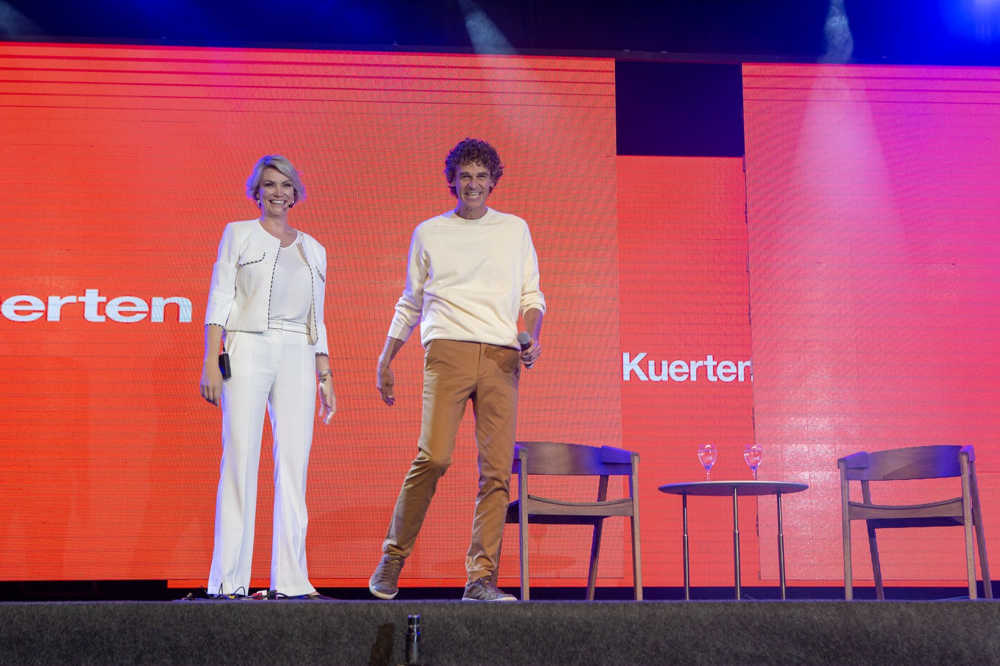
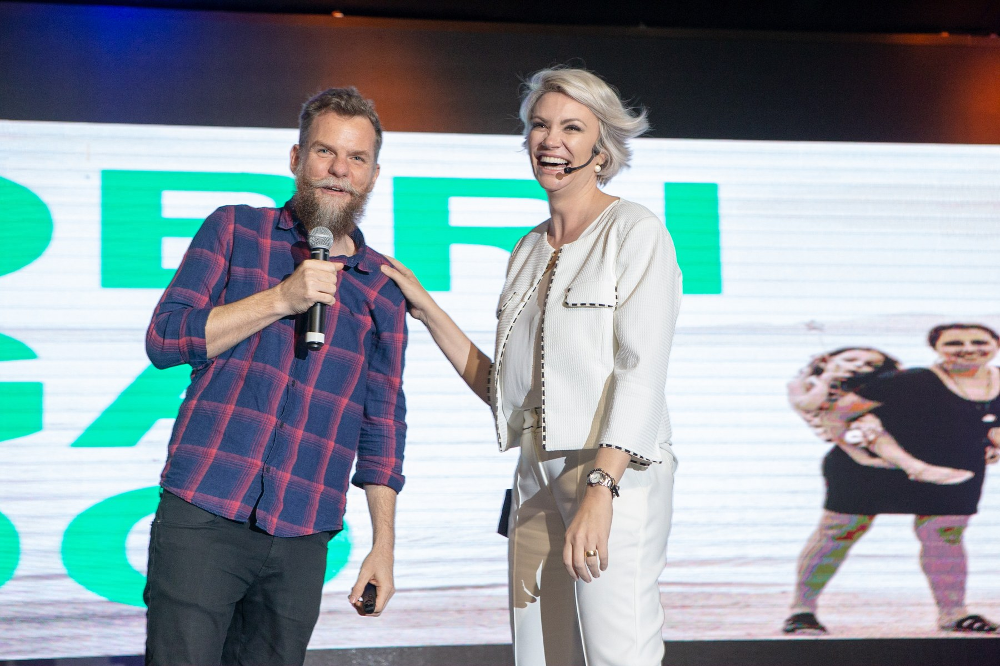

META V — ACESSO GRAVADO
Conteúdo para estudar gestão e liderança com flexibilidade e revisar os conceitos conforme sua necessidade.
Conheça o gravadoVIRTÙ / Soluções para empresas
Conheça as jornadas da Virtù para desenvolver lideranças, fortalecer a cultura e estruturar o trabalho das equipes.
Alguns desafios pedem repertório e desenvolvimento individual. Outros exigem trabalho conjunto com as lideranças ou revisão dos processos de gestão.
As jornadas da Virtù oferecem diferentes formas de participação. Conheça a proposta de cada uma.
Conteúdo para estudar gestão e liderança com flexibilidade e revisar os conceitos conforme sua necessidade.
Conheça o gravadoAprendizagem e aplicação de práticas de liderança, com encontros e acompanhamento conforme a modalidade.
Conheça a oficinaConstrução orientada da gestão de pessoas com quem toma as decisões do negócio.
Conheça a mentoria
Uma jornada in company desenhada para as necessidades de desenvolvimento das lideranças da sua empresa.
Conheça o PHD
Consultoria para diagnosticar e estruturar cultura, processos e indicadores da gestão de pessoas.
Conheça o VanguardConte quais desafios aparecem no dia a dia, quem precisa participar do trabalho e o que sua empresa pretende desenvolver.
Com esse contexto, nossa equipe apresenta a jornada e as condições que fazem sentido para o projeto.